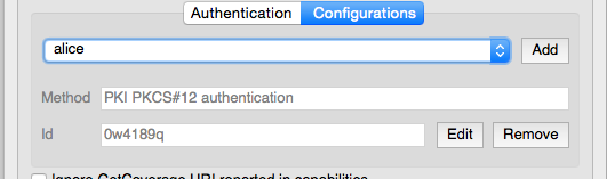
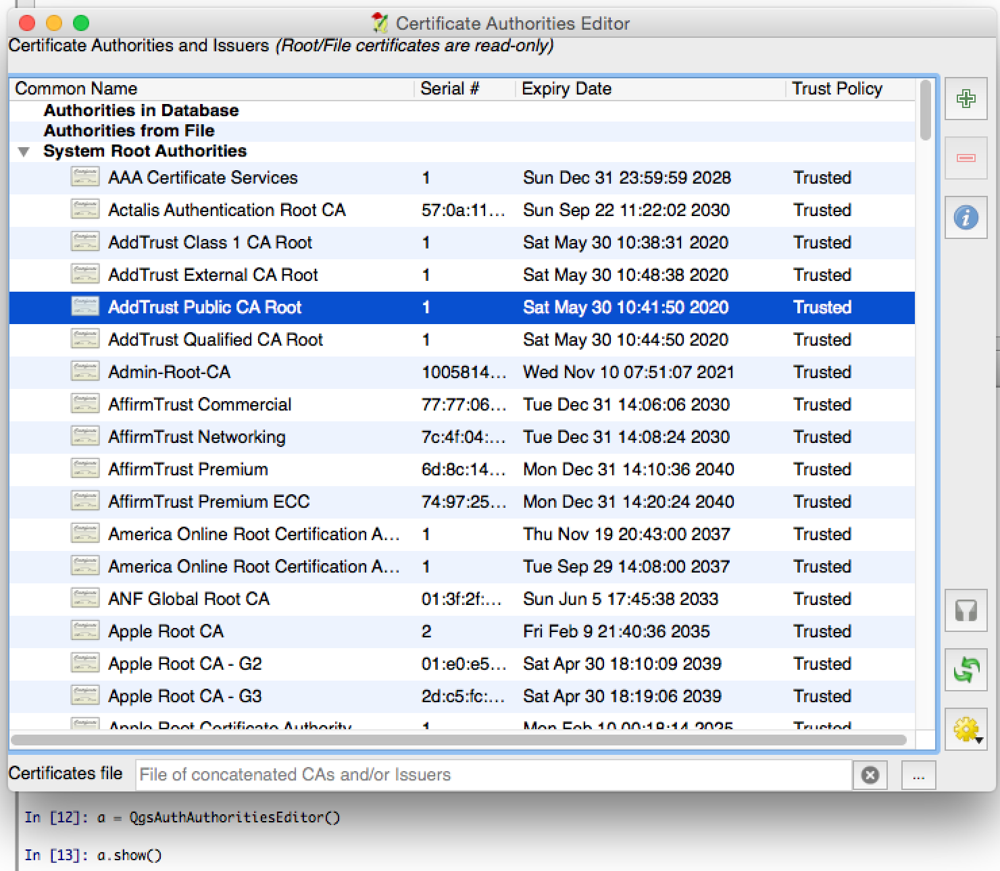

14 认证基础
本节的代码片段需要导入以下模块：
1
2
3
4
5
6
7
8
9
10
11
12
13
14
15
16
17
18
19
20
21
22 from qgis.core import (
QgsApplication ,
QgsRasterLayer ,
QgsAuthMethodConfig ,
QgsDataSourceUri ,
QgsPkiBundle ,
QgsMessageLog ,
)
from qgis.gui import (
QgsAuthAuthoritiesEditor ,
QgsAuthConfigEditor ,
QgsAuthConfigSelect ,
QgsAuthSettingsWidget ,
)
from qgis.PyQt.QtWidgets import (
QWidget ,
QTabWidget ,
)
from qgis.PyQt.QtNetwork import QSslCertificate
14.1 介绍
认证基础的用户参考可以在用户手册的“认证系统概述” 中阅读。
本章是描述从开发人员角度使用认证系统的最佳实践。
在QGIS桌面中，当需要凭证来访问特定资源时，例如当一个图层建立在Postgres数据库连接时，数据提供者就广泛地使用了认证系统。
QGIS gui库中还有一些部件，插件开发人员可以使用它们轻松地将认证基础集成到代码中：
可以从认证基础测试代码 中学习良好的代码引用。
警告
由于认证基础设计过程中考虑到安全约束，只有选定的内部方法集可以暴露给Python。
14.2 词汇表
以下是本章中最常见对象的一些定义。
允许访问和解密存储在QGIS认证中凭据的密码
一个主密码 加密后的SQLite数据库qgis-auth.db ，其中认证配置 存储在这里。例如用户名/密码，个人证书和密钥，证书颁发机构
认证数据库
一组认证数据，取决于认证方法 。例如，基本认证方法存储一对用户名/密码。
用于获取认证的特定方法。每个方法都有自己的协议，用于获取认证级别。每个方法都是在QGIS认证基础初始化期间动态加载的共享库。
14.3 QgsAuthManager入口
单例类QgsAuthManager认证数据库 加密证书的入口，即，在当前用户资料 文件夹下的qgis-auth.db文件。
此类负责用户交互：通过设置主密码或透明地使用它来访问加密的存储信息。
14.3.1 初始化管理器并设置主密码
以下代码段提供了一个示例，设置主密码来打开对认证设置的访问权限。代码注释对于理解代码非常重要。
1
2
3
4
5
6
7
8
9
10
11
12
13
14
15
16
17 authMgr = QgsApplication . authManager ()
# 检查QgsAuthManager是否已经初始化... QgsAuthManager.init()的额外作用是设置了AuthDbPath。
# QgsAuthManager.init()在QGIS应用程序初始化期间执行，因此通常不需要直接调用它。
if authMgr . authenticationDatabasePath ():
if authMgr . masterPasswordIsSet ():
msg = 'Authentication master password not recognized'
assert authMgr . masterPasswordSame ( "your master password" ), msg
else :
msg = 'Master password could not be set'
# 验证verify参数密码的哈希值是否已保存在认证数据库中
assert authMgr . setMasterPassword ( "your master password" , verify = True ), msg
else :
# 在qgis环境之外，例如在测试环境中=>在数据库初始化之前设置环境变量
os . environ [ 'QGIS_AUTH_DB_DIR_PATH' ] = "/path/where/located/qgis-auth.db"
msg = 'Master password could not be set'
assert authMgr . setMasterPassword ( "your master password" , True ), msg
authMgr . init ( "/path/where/located/qgis-auth.db" )
14.3.2 使用新的认证配置项填充认证数据库
任何存储的凭证都是QgsAuthMethodConfig认证配置 实例——使用唯一字符串访问：
该字符串是在使用QGIS API或GUI创建条目时自动生成的，但如果配置必须在一个组织内的多个用户之间共享（不同的凭证），将其手动设置为一个已知值可能是有用的。
QgsAuthMethodConfig认证方法 的基类。任何认证方法集都会配置哈希映射，其中存储认证信息。下面是一个有用的代码片段，用于存储alice用户的PKI路径凭证：
1
2
3
4
5
6
7
8
9
10
11
12
13
14
15 authMgr = QgsApplication . authManager ()
# 设置 alice PKI 数据
p_config = QgsAuthMethodConfig ()
p_config . setName ( "alice" )
p_config . setMethod ( "PKI-Paths" )
p_config . setUri ( "https://example.com" )
p_config . setConfig ( "certpath" , "path/to/alice-cert.pem" )
p_config . setConfig ( "keypath" , "path/to/alice-key.pem" )
# 检查方法参数是否正确设置
assert p_config . isValid ()
# 在认证数据库中注册alice数据，返回存储的‘authcfg’配置
authMgr . storeAuthenticationConfig ( p_config )
newAuthCfgId = p_config . id ()
assert ( newAuthCfgId )
14.3.2.1 可用的认证方法
认证方法 在认证管理器初始化时动态加载。可用的认证方法列表如下：
Basic 用户和密码验证EsriToken ESRI token 基础认证Identity-Cert 身份证书认证PKI-Paths PKI路径认证PKI-PKCS#12 PKI PKCS＃12认证
14.3.2.2 填充权限
authMgr = QgsApplication . authManager ()
# 添加权限
cacerts = QSslCertificate . fromPath ( "/path/to/ca_chains.pem" )
assert cacerts is not None
# 存储 CA
authMgr . storeCertAuthorities ( cacerts )
# 重建CA缓存
authMgr . rebuildCaCertsCache ()
authMgr . rebuildTrustedCaCertsCache ()
14.3.2.3 使用QgsPkiBundle管理PKI
QgsPkiBundle 类是一个方便的类，用于打包由SslCert、SslKey和CA链组成的PKI包。下面是一个获得密码保护的片段：
# 密钥与密码一起添加alice证书
caBundlesList = []
bundle = QgsPkiBundle . fromPemPaths ( "/path/to/alice-cert.pem" ,
"/path/to/alice-key_w-pass.pem" ,
"unlock_pwd" ,
caBundlesList )
assert bundle is not None
# 你可以检查它是否正确
# bundle.isValid()
请参阅QgsPkiBundle
14.3.3 从认证数据库中删除条目
我们可以使用authcfg标识符从认证数据库 中删除条目：
authMgr = QgsApplication . authManager ()
authMgr . removeAuthenticationConfig ( "authCfg_Id_to_remove" )
14.3.4 使用QgsAuthManager扩展authcfg
使用存储在认证数据库 中的认证配置 的最好方法是用唯一的标识符authcfg来引用它。扩展，意味着把它从一个标识符转换成一套完整的凭证。使用存储的认证配置 的最佳做法，是让它由认证管理器自动管理。存储配置的常见用途是连接到一个启用了认证的服务，如WMS、WFS或数据库连接。
提示
并非所有的QGIS数据提供者都与认证基础集成。每个认证方法都是从基类QgsAuthMethod 派生出来的，并支持一组不同的提供者。例如，certIdentity() 方法支持以下的提供者列表:
authM = QgsApplication . authManager ()
print ( authM . authMethod ( "Identity-Cert" ) . supportedDataProviders ())
# ['ows', 'wfs', 'wcs', 'wms', 'postgres']
例如，要使用authcfg = 'fm1s770'标识的存储凭证访问WMS服务，我们只需在数据源URL中使用authcfg，如以下代码:
1
2
3
4
5
6
7
8
9
10
11
12 authCfg = 'fm1s770'
quri = QgsDataSourceUri ()
quri . setParam ( "layers" , 'usa:states' )
quri . setParam ( "styles" , '' )
quri . setParam ( "format" , 'image/png' )
quri . setParam ( "crs" , 'EPSG:4326' )
quri . setParam ( "dpiMode" , '7' )
quri . setParam ( "featureCount" , '10' )
quri . setParam ( "authcfg" , authCfg ) # <---- authCfg url 配置
quri . setParam ( "contextualWMSLegend" , '0' )
quri . setParam ( "url" , 'https://my_auth_enabled_server_ip/wms' )
rlayer = QgsRasterLayer ( str ( quri . encodedUri (), "utf-8" ), 'states' , 'wms' )
wms提供者在设置HTTP连接之前，会将authcfg URI参数与凭证展开。
通常情况下，使用QgsDataSourceURI 类构建的URI字符串被用来设置数据源，其方式如下:
authCfg = 'fm1s770'
quri = QgsDataSourceUri ( "my WMS uri here" )
quri . setParam ( "authcfg" , authCfg )
rlayer = QgsRasterLayer ( quri . uri ( False ), 'states' , 'wms' )
提示
False参数很重要，可以避免URL中已存在的authcfg
14.3.4.1 使用其它数据提供者的PKI例子
其它例子可以在QGIS测试文件夹中直接读取，如test_authmanager_pki_ows 或test_authmanager_pki_postgres .
14.4 调整插件使用认证基础
许多第三方插件使用httplib2或其他Python网络库来管理HTTP连接，而不是与QgsNetworkAccessManager
为了便于集成，我们创建了一个名为NetworkAccessManager的Python帮助函数。它的代码可以在这里 找到。
此帮助程序类可以在以下代码段中使用：
http = NetworkAccessManager ( authid = "my_authCfg" , exception_class = My_FailedRequestError )
try :
response , content = http . request ( "my_rest_url" )
except My_FailedRequestError , e :
# 处理异常
pass
14.5 认证GUI
本节列出了可用于在自定义接口中集成认证基础的可用GUI。
14.5.1 GUI选择证书
如果需要从存储在认证数据库 中选择认证配置 ，则可以在GUI类QgsAuthConfigSelect中使用。

可在以下代码段中使用：
# 创建一个QgsAuthConfigSelect GUI实例，该实例与`parent`有父子关系
parent = QWidget () # GUI父级控件
gui = QgsAuthConfigSelect ( parent , "postgres" )
# 在一个新标签中添加上述创建的GUI控件。
tabGui = QTabWidget ()
tabGui . insertTab ( 1 , gui , "Configurations" )
以上示例摘自QGIS源代码 。GUI构造函数的第二个参数引用数据提供者类型。参数用于限制与指定提供者兼容的认证方法 。
14.5.2 认证编辑器
用于管理凭据、权限和访问认证实用程序的完整GUI由QgsAuthEditorWidgets
可在以下代码段中使用：
# 创建一个QgsAuthConfigSelect GUI实例，该实例与`parent`有父子关系
parent = QWidget () # GUI父级控件
gui = QgsAuthConfigSelect ( parent )
gui . show ()
可以在相关的测试 代码中找到一个综合的例子。
14.5.3 机构（证书颁发）编辑器
仅用于管理机构的GUI由QGSAuthoritiesEditor

可在以下代码段中使用：
# 创建一个QgsAuthConfigSelect GUI实例，该实例与`parent`有父子关系
parent = QWidget () # GUI父级控件
gui = QgsAuthAuthoritiesEditor ( parent )
gui . show ()